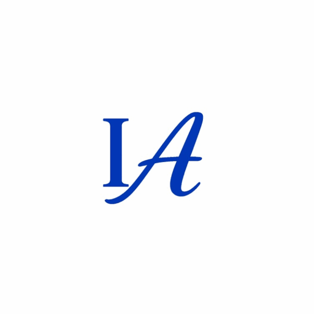

Intelligent Architecture
Software-Accelerated Zero Trust Machine Identity Provisioning for Microsoft Entra ID


Software-Accelerated Zero Trust Machine Identity Provisioning for Microsoft Entra ID
The Zero Trust Infrastructure as Code Software is not a traditional compiled application. It operates as an advanced declarative LLM orchestrator and deterministic state machine. Its primary objective is to bridge the critical gap between probabilistic AI code generation and the strict, mathematically certain execution required for enterprise-grade infrastructure.
While generative AI accelerates engineering, unconstrained models introduce massive liabilities in production environments. This framework was engineered with a strict immutable rationale to explicitly neutralize the five critical vulnerabilities of AI-assisted cloud deployment:
Generative models often require proprietary network details to output accurate code. This software acts as a decoupled logic engine; it relies exclusively on explicit, plain-language engineering parameters and raw-schema verification. No proprietary tenant IDs, exact asset names, or corporate repository coordinates are ever hardcoded or exposed to the underlying model.
AI natively prioritizes making code "work," often opting to drop and recreate conflicting resources. This framework enforces strict idempotency, injecting prevent_destroy lifecycle constraints and utilizing data blocks to guarantee existing enterprise infrastructure is never accidentally overwritten.
To bypass access errors, unconstrained AI defaults to broad control-plane role assignments. This software mathematically enforces the Principle of Least Privilege (PoLP), restricting all mapping exclusively to granular data-plane capabilities (e.g., Key Vault Secrets User) scoped precisely to the target asset.
Language models frequently hallucinate non-existent provider versions or pull unverified community modules. The engine is hardcoded to pin all Terraform providers, Azure Bicep extensions, and pipeline actions to specific, verified version numbers, rejecting any floating dependencies.
Even with passwordless federation, dynamic execution can expose sensitive GUIDs or infrastructure topography in the console. The software aggressively enforces strict string masking (e.g., ::add-mask::) for all runtime variables to prevent inadvertent logging.